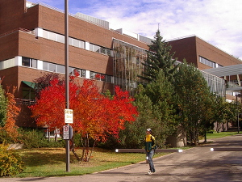

Services
Services
Study in Canada Consultancy Services
Our Canadian consultant focuses on placing Pakistani students into Canadian colleges and universities as this is where her expertise lies. With a background of working for over 27 years at a major Canadian university, she is has the knowledge and capability to consult students on the best options for pursuing post-secondary education in Canada. The team at Alberta Rose Education Centre will guide you in all aspects of your studying in Canada goals.
About Canada

Canada is the 2nd largest country in the world with a population of approximately 35 million. It is one of the best places in the world to live as it is one of the most peaceful countries in the world where diversity is not only accepted but encouraged. Canada is fast becoming the country of choice for international students because of:
- While we have a small higher education service compared to other nations, Canada’s post-secondary education universities rank among the highest world-wide. Canada has some of the lowest tuition costs in the world, a lower cost of living (as compared to the UK, the US and Australia) and still offers quality for less.
- According to UN sources, Canada is considered one of the most liveable countries to live in. We are among the happiest, most peaceful nations in the world with a high standard of living, high life expectancy and many social programs.
- Canada has one of the best health care systems in the world where health care is affordable because of provincial health care initiatives. Some provinces provide basic health care services to their international students free of charge.
- Multiculturalism is a national policy, not just a concept so Canada welcomes immigrants from all over the world. One out of every 6th person in Canada is an immigrant.
- Work opportunities await the international student and students are permitted to work part-time while studying to offset some of the expenses of studying in Canada. Government work programs also encourage international students to stay in Canada and work after their graduation from a Canadian university or college.
- Practical training is an integrate part of studying in Canada so students get the opportunity to have hands-on training related to their study program.
About Universities & Colleges in Canada
You can study at some of the best world-class universities and colleges in Canada. The government of Canada heavily funds its educational systems, especially at the post-secondary level. Therefore public universities and colleges in Canada are among the best places in the world to study at. In 2013, 23 of Canada’s universities ranked in the top 500 universities in the world; as per the recently published Academic Ranking of World Universities. Obtaining a degree from a Canadian institution provides you with a world-recognised degree.
Many scholarships, grants and funding opportunities are available to international students. Canada has a work program that allows students to work up to 20 hours per week during their studies to help cover the cost of living while going to a university or college in Canada.
Some of the colleges and universities that we work closely with are the University of Alberta (in the top 100 in world rankings), Grant MacEwan University, Douglas College and Georgian College; but we are not limited to these institutions and are able to process applications to study at many other colleges and universities in Canada.
About our services
Whether you want to pursue graduate or undergraduate studies in Canada, we have the expertise and knowledge to get you there. From the very beginning we work with our students so they will be accepted into the program of choice.
- Undergraduate Students – from consulting, to admission application – to finding accommodation – to finding possible scholarship sources – to airport pick-up; we are there to help you each step of the way.
- Graduate Students – from consulting, to finding a supervisor – to funding issues – to research proposal writing – to accommodations – to airport pick-up; we are there to help you each step of the way.
(As a free courtesy service, we will direct you to the right websites and student visa processing resources.)
If you are interested in using our consulting services, please fill in the this form to determine your eligibility to attend a Canadian institution. You will also receive a detailed list of our services and rates.
IELTS Exam Preparation

If you are planning to emigrate to an English speaking country, whether for studies or for immigration, then you will most likely have to write the IELTS exam or one of the other English Proficiency exams. Alberta Rose Education Centre provides IELTS Exam Preparation Courses at their Lahore, Pakistan location. The experienced IELTS teacher is a 2 degree holder from a Canadian university and is a native English speaker who can capably coach you in the 4 components on the General and Academic IELTS exam.
Why Write the IELTS Exam?
Unless you are a student who has received excellent marks in O Level English Literature under the Cambridge System, or if you have gone to an English medium school or university in Pakistan, you will HAVE to write the IELTS, or another English language proficiency testing exam. The colleges and universities in Canada, or other countries where you want to study need to know your level of English Language Proficiency (ELP) in order to consider your eligibility for one of their study programs. A test like the IELTS Exam helps them in their decision making.
Even if you have studied in an English medium system, you may want to consider writing the exam or receive training in an IELTS Exam Preparation course as it hones your academic English language skills.
Why Take the IELTS Exam Preparation Course?
Most students in Pakistan, even if they have studied in an English medium school or university do not have sufficient familiarity in English to function well in English speaking academic settings. Most students cannot write as well as is expected for a college or university in an English speaking country such as Canada. Therefore, for your benefit, to obtain high marks and achieve full success at an institution in Canada, or internationally, it is advisable to get IELTS coaching and/or write the exam from a native English speaker who can train you in all aspects of academic English language proficiency.
The full 30 lesson IELTS Exam Preparation Course covers the Listening, Reading, Writing and Speaking components of the exam. Many students find that they benefit from the full course, although the course can be streamlined to coach you in the areas which you need most. For example, if you are strong in listening, but weak in writing, you can take only that portion of the course to improve in your weakest area.
For course details or tuition costs, contact Alberta Rose Education Centre.
ELP Measurement Test
Write this short assessment to find out if you should take the course and/or write the exam. You will get a personalised response to writing this assessment test. (For Pakistan students only)
English Editing Services
Alberta Rose Education Centre provides top calibre English editing and proofreading services in Pakistan. These services are provided by native English staff who can meet all your proofreading and editing needs as an international standard of English is the only medium used. You need to shop no further for a top-notch editor/proofreader who can do the following:
- For University Students and Academics: Coach/edit/proofread theses, term papers, academic papers – APA or Chicago formatting style
- For the Business Person: Edit/proofread business documents, including cover letters and CVs or resumes
- For Technical Writers: Edit/proofread technical documents such as policy procedure manuals, etc.
- For Website Entrepreneurs: Proofread web content articles
- If you have anything in the English language which needs proofreading, we can do it.
We maintain a high level of international English language standards and can deliver in a very short turnaround time. Most single or double page documents can be returned to the client within 24 hours.
We even do Urdu to English translations for study abroad purposes.
For more details and their editing/proofreading rates, contact Alberta Rose Education Centre.